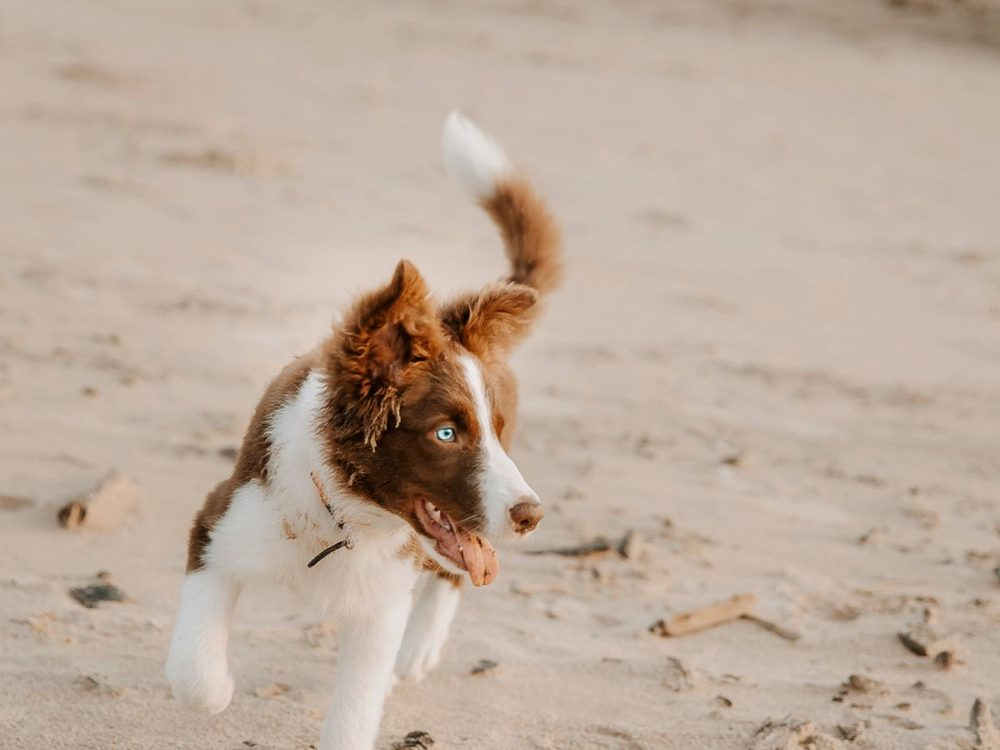

Paloma Community Park Dog Park Lighted, 3 acres, small-dog section
- Fenced Yes — enclosed off-leash yards (three enclosures reported at opening; two kept open while the third rests)
- Water Yes — the city lists pet drinking fountains at its dog parks
- Shade Not stated for the dog park
- Small-dog area Yes — a section for dogs under 35 pounds (azcentral, opening day 2020)
- Restrooms Yes — multiple restroom buildings in the park (location relative to the dog park not stated)
- Hours Daily 6 a.m.–10:30 p.m. (city park hours; some holiday exceptions); the dog park is lighted
Peoria’s newest community park opened in October 2020 with a three-acre, off-leash dog park (Visit Peoria) that the city lists as a lighted dog park, which helps for summer evening visits. azcentral’s opening-day coverage described three enclosed dog yards, two open while the third gets maintenance, including a section for dogs under 35 pounds. The park also has a fishing lake, splash pad (seasonal), inclusive playground, pickleball courts, ramadas, and restrooms. City dog parks page · Paloma Community Park page · Visit Peoria · azcentral (2020).